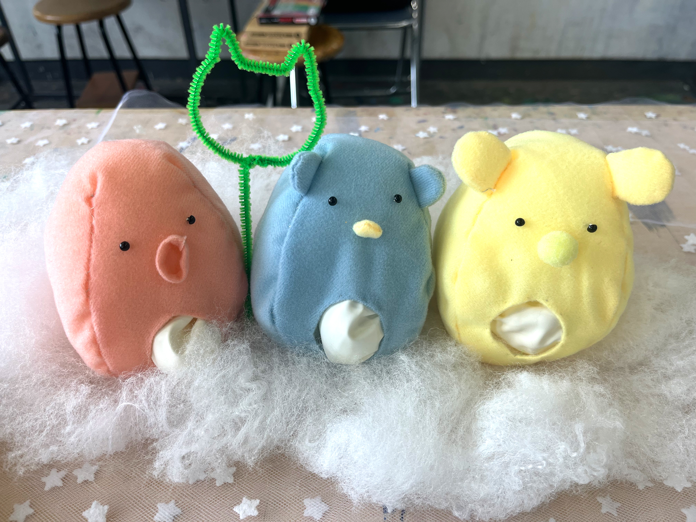

水のおもちゃ

目的・課題
- 「水を用いたおもちゃを作る」という共通のテーマ。
- 水は音が出たり、容器に入れると形が変わるなど多様な特徴があるため、その特性を生かして制作に取り組んだ。
制作期間
- 土日2週分（計4日間）、9:00〜17:30登校して制作を行った。
制作物について
- 「タプタプ星人」と名付けた3体のぬいぐるみを制作。水風船に水を入れたもの、消臭ビーズを入れたもの、保冷剤のジェルを入れたものの3種類。
- 各それぞれ触感の違いを楽しめ、見た目も愛らしいデザインに仕上げことで評価され、学生約80名の投票で発表者（約8名）に選出された。